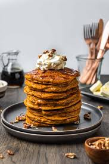

Sweet Potato Pancakes Reciepe

How to make Sweet Potato Pancakes
Mornings are not complete until a stack of pancakes has been placed down in front of us.
These sweet potato pancakes are an amazing twist on the original that is perfect for a fall
morning. Roast sweet potatoes to make your own puree or use canned; either way, you'll still
have a fluffy, homemade pancake that's better than any box mix could produce.
Ingredients
- all-purpose flour
- baking powder
- baking soda
- cinnamon
- 2 large eggs
- ground ginger
- and of course, 2 sweet potatoes
Directions
- In a large bowl, whisk flour, baking powder, baking soda, brown sugar, salt, cinnamon, nutmeg, and ginger.
- In a separate bowl, whisk together buttermilk and sweet potato puree, then add eggs and vanilla
- Add wet ingredients to dry ingredients and stir wooden spoon until just combined
- Melt butter in a large nonstick skillet or griddle over medium heat. When butter is foamy, reduce heat to medium-low and ladle a scant ½ cup pancake batter into skillet. Cook until bubbles start to form in batter and pancake is golden underneath, about 3 minutes, then flip and cook other side until golden, another 3 minutes.
- Repeat with remaining batter. Serve with more butter, toasted pecans, and maple syrup.